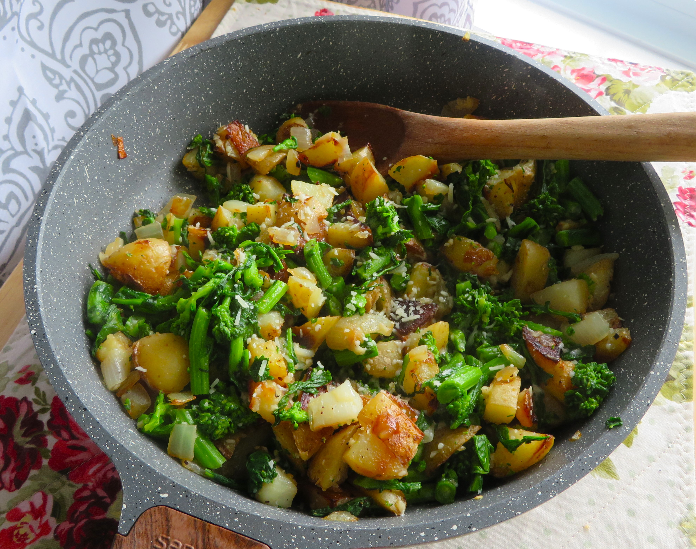

Rapini & Potatoes
By David Rocco
Serves 4
Back to home

Description
Old school Italia is always best
Ingredients
- 1 Rapini bunch, chopped
- 3 Potatoes, peeled and chopped
- 1/3 cup Extra Virgin Olive Oil
- 1 Red chilli pepper, chopped
- 2 cloves garlic, peeled chopped
- 1 Lemon, zest and juice
- 1 bunch basil, chopped
- Salt QB
- 500 mls Water
Steps
- In a pot or deep pan, add olive oil, garlic and red chilli pepper.
- Let sauté for a minute, and then add the potatoes.
- Add water, rapini and salt, and let cook for 20 minutes or until potatoes get soft and water has reduced by half.
- Smash 1/4 of the potatoes to make the dish a little creamy, zest a lemon and let rest for 20 minutes off heat.
- Before serving, add basil and a squeeze of one lemon.
- Serve with toasted Italian bread.